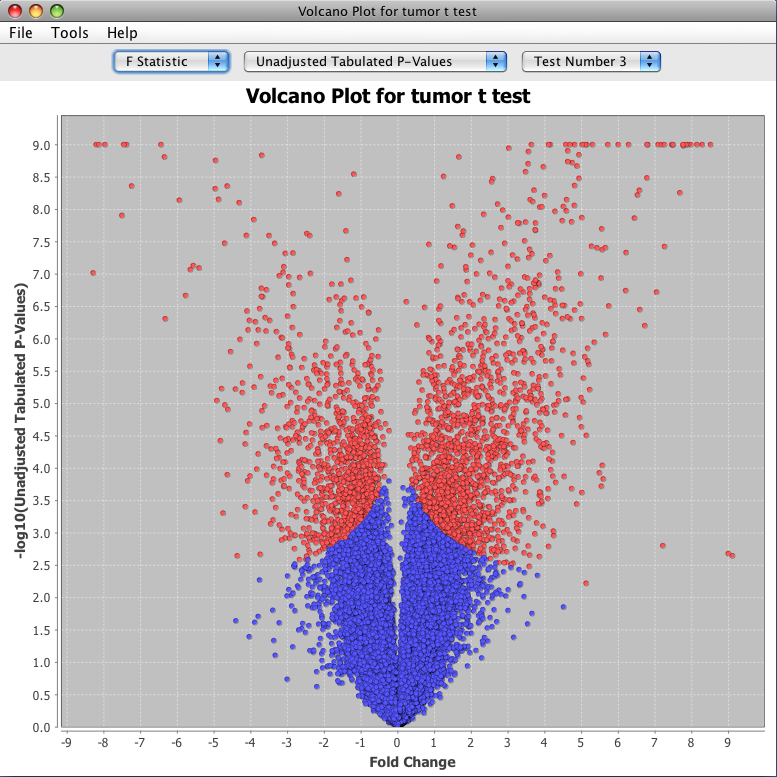

After testing a model you can display a volcano plot of the resulting test statistics. If you used an F-test the volcano plot will be one-sided but if you used a t-test the volcano plot will be two sided. You can choose which test statistic to display using the drop down controls at the top of the graph. The Y-axis of the volcano plot will be the test statistic that you have selected and the X-axis will always be the fold change.

Example Volcano Plot
After creating the graph you can mouse over any of the data points to see a popup window containing more detailed information. Most of the controlls in the volcano plot are described in the general graph settings help documentation. The following list describes the menu items that are not covered in the general setting document:
Tools→Clear Selections: deselects any points that you have currently selected (selected points are rendered in red)
Tools→Drag Cursor to Select: arms the cursor for point selection. Drag a box over the points that you want to select
Tools→Drag Cursor to Zoom: arms the cursor for zooming. Drag a box over an area to zoom into that area
Tools→Show Results Table: displays the test results table for the same test that the volcano plot corresponds to
Tools→Save Selected Points to Gene List: saves the selected points (the red points) to a gene list for later use
Tools→Select Points from Gene List: selects points from an existing gene list